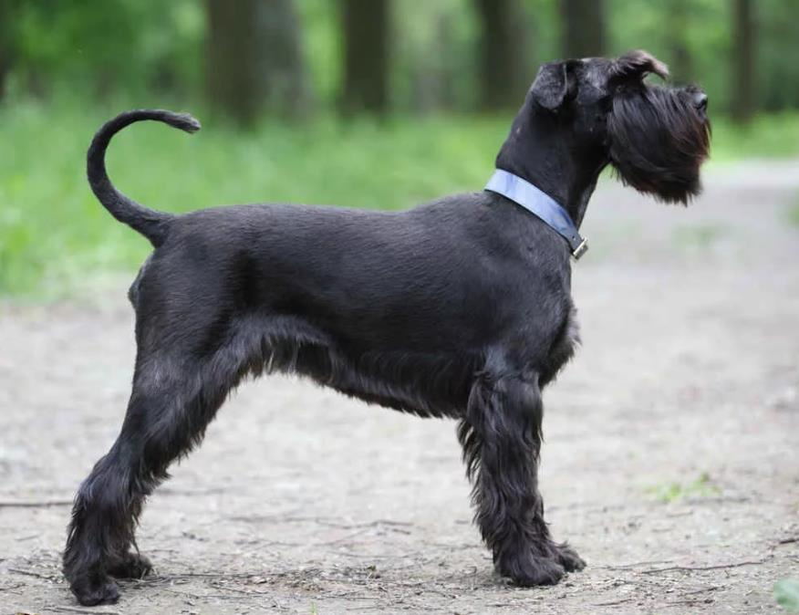

Моя любимая собака
Мою собаку зовут Удо. Он мальчик. Его порода Ризеншнауцер. Его день рождения 4 апреля. Ему 9 лет. Он очень активный и любит гулять. Также он очень любит играть со мной и моим братом. Он очень любит детей.
Интересные факты о собаках
- В России насчитывается более 22,6 млн. собак.
- Нос собаки – это ее отпечаток пальца. Нет двух одинаковых собак с одинаковым носом. Каждый из них имеет уникальный рисунок, что делает нос собаки эквивалентным отпечатку пальца человека.
- У собак меньше вкусовых рецепторов, чем у людей. У собак около 1 700 вкусовых рецепторов, в то время как у людей - от 2 000 до 10 000.
- Салюки – самая древняя порода собак. Рекорд Гиннесса по самой старой породе собак принадлежит салюки. Это не самая распространенная порода, но они появились еще в 329 году до нашей эры как домашние животные, которых держали древние царственные египтяне
- Собаки бескорыстны. Собаки – одни из немногих животных в мире, которые, как было доказано, совершают бескорыстные, добровольные поступки, не ожидая вознаграждения.
- Ирландские волкодавы – самая высокая порода собак. Ирландский волкодав высотой от 75 до 90 см является самой высокой породой собак.
- Собаки могут выучить более 1 000 слов.
- Собаки потеют лапами. Оказывается, собаки тоже потеют, и не только языком, это факт. Но у человека лишняя влага выделяется потовыми железами, расположенными по всему телу, а у собак такие железы находятся только на лапах.
- Шум дождя вреден для слуха собаки Интересно, что собаки не любят выходить на улицу, когда идет дождь, не потому, что они боятся намокнуть, а потому, что шум дождя им очень неприятен. Поскольку у этих животных такой звук отрицательно сказывается на их чувствительном слухе.
- Собаки умеют влюбляться Когда собаки контактируют с людьми или другими собаками, в их мозгу выделяется окситоцин или гормон любви.
- Как и их хозяева, питомцы видят сны. Обычно им снятся любимые лакомства, игрушки и птицы. Если у животного был плохой день или он находится в состоянии стресса, его сон будет беспокойным и прерывистым.
- Собаки могут потеть. Если у людей пот выделяется через поры, то у их любимцев он проступает через лапы.
